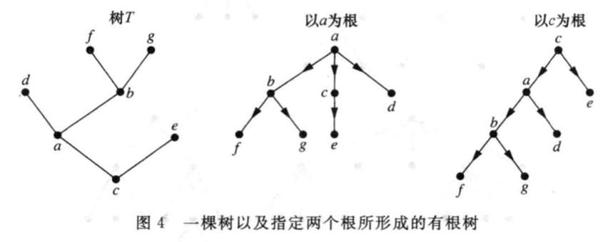
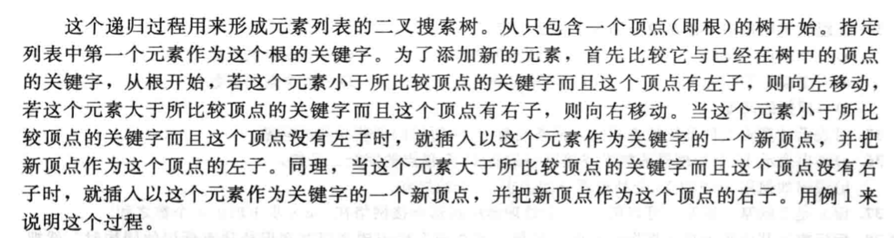
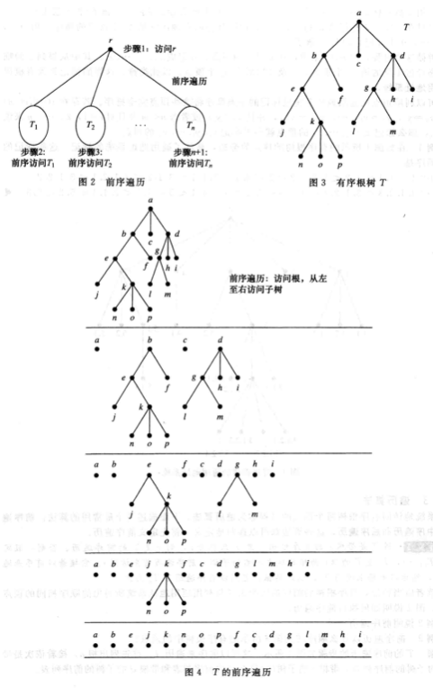
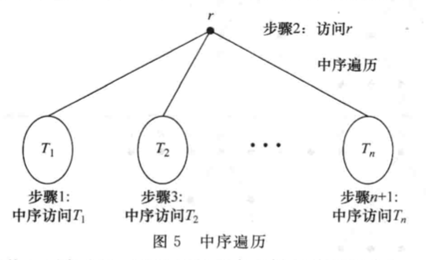
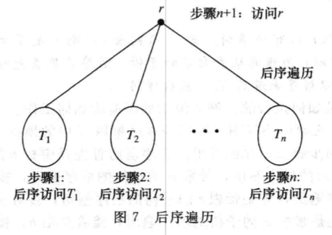
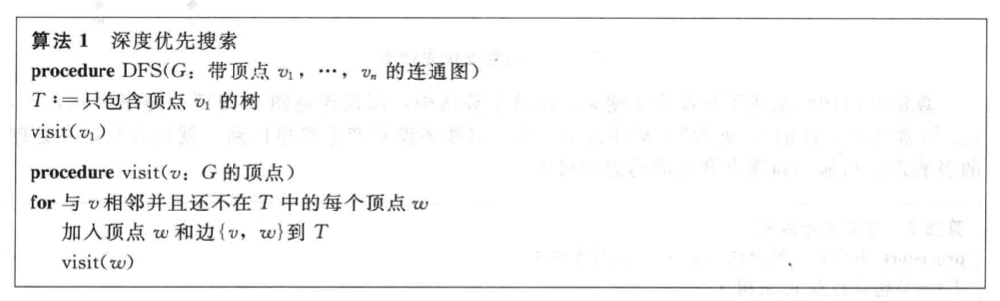
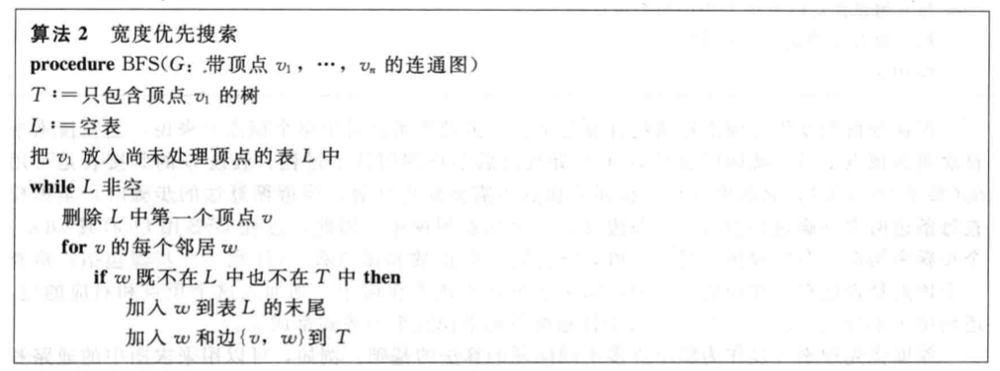

11.1 树的概述
定义1
树是没有简单回路的连通无向图。
森林是没有简单回路但不一定连通的图，而且它们的每个连通分支都是树。
定理1
一个无向图是树当且仅当在它的每对顶点之间存在唯一简单通路。
定义2
有根树是指定一个顶点作为根并且每条边的方向都离开根的树。

- 假定T是有根树，若v是T中的非根顶点，则v的父母是从u到v存在有向边的唯一顶点u，此时v称为u的孩子。
- 具有相同父母的顶点称为兄弟。
- 非根顶点的祖先是从根到该顶点通路上的顶点，不包括该顶点自身但包括根。
- 顶点v的后代是以v作为祖先的顶点。
- 树的顶点没有孩子时称为树叶。
- 有孩子的顶点称为内点。
定义3
若有根树的每个内点都有不超过m个孩子，则称它为m叉树。若该树的每个内点都恰好有m个孩子，则称它为满m叉树。m=2的m叉树称为二叉树。
有序根树是把每个内点的孩子都排序的有根树。
在有序二叉树中，若一个内点有2个孩子，则第一个孩子称为左子，第二个孩子称为右子。以一个顶点的左子为根的树称为该顶点的左子树，以一个顶点的右子为根的树称为该顶点的右子树。
定理2
带有n个顶点的树含有n-1条边。
定理3
带有i个内点的满m叉树有n=mi+1个顶点。
定理4
一个满m叉树若有
- n个顶点，则有i=(n-1)/m个内点和l=[(m-1)n+1]/m个树叶；
- i个内点，则有n=mi+1个顶点和l=(m-1)i+1个树叶；
- l个树叶，则有n=(ml-1)/(m-1)个顶点和i=(l-1)/(m-1)个内点。
层：有根树中顶点v的层是从根到这个顶点的唯一通路的长度。根的层定义为0。
高度：有根树的高度就是顶点层数的最大值。
平衡m叉树：在一棵高度为h的m叉树的所有树叶都在h层或h-1层。
定理5
在高度为h的m叉树中至多有m^h^个树叶。
推论1
若一棵高度为h的m叉树带有l个树叶，则h>=logml向上取整。若这颗m叉树是满的和平衡的，则h=logml向上取整。
11.2 树的应用
二叉搜索树
二叉搜索树是一种二叉树，其中每个顶点的每个孩子都指定为左子或右子。每个顶点用一个关键字标记，顶点的关键字要求大于它的左子树里的所有顶点的关键字，而且小于它的右子树里的所有顶点的关键字。


决策树
有根树可以为决策求解问题建立模型。例如二叉搜索树可以用来基于一系列比较来找出元素的位置，其中每次比较都说明是否已经找到了元素的位置，或者是否应当向左或向右进入子树，每个内点都对应一个决策，这些顶点的子树都对应着该决策的每种可能结果，这样的有根树就是决策树，问题的可能解对应着这个有根树中通向树叶的通路。
前缀码
英语字母表的编码问题，考虑用不同长度的位串来编码字母。较短的位串用来编码较频繁出现的字母，较长的位串用来编码不经常出现的字母。当用可变长的位数来给字母编码时，就必须用某种方法来确定每个字母的位在何处开始和结束。例如，e编码0，a编码1，t编码01，0101位串可能对应eat，tea，eaea或tt。
为了保证没有位串对应着多个字母的序列，可以令一个字母的位串永远不出现在另一个字母的位串的开头部分，具有这个性质的编码称为前缀码。例如e编码0，a编码10，t编码11，这样的编码就是前缀码，10110就是ate的编码。
前缀码可以用二叉树表示，其中字符是树中树叶的标记，树的边也被标记，使得通向左子的边标记为0，通向右子的边标记为1。用来编码一个字符的位串是在从根到以这个字符为标记的树叶的唯一通路上标记的序列。
例如图5所示的编码树，可以用来理解11111011100这个单词，是sane。

哈夫曼编码
给定符号及其频率，目标是构造一个有根的二叉树，符号是树叶的标记。算法从只含有一个顶点的一些树构成的森林开始，其中每个顶点有一个符号作为标记，这个顶点的权就是所标记符号的频率。每一步，把具有最小总权值的两个树合成一个单独的树，方法是引入一个新的根，把具有较大的权的树作为左子树，把具有较小权的树作为右子树，这个树的两个子树的权之和作为这个树的总权值。当森林缩小为单个树时，算法停止。

博弈树
博弈树用来为一些游戏建立模型，这些游戏里两个选手轮流进行移动，每个选手知道另一个选手的移动并且游戏不存在偶然因素，这些树的顶点表示当游戏进行时游戏所处的局面，边表示在这些局面之间合乎规则的移动。
11.3 树的遍历
定义1
前序遍历：设T是带根r的有序根树，若T只包含r，则r是T的前序遍历，否则，假定T1，T2，…，Tn是T以r为根的从左向右的子树，前序遍历先访问r，接着以前序遍历访问T1，然后以前序遍历访问T2，以此类推直到前序遍历访问Tn为止。

定义2
中序遍历：设T是带根r的有序根树，若T只包含r，则r是T的中序遍历，否则，假定T1，T2，…，Tn是T以r为根的从左向右的子树，中序遍历先以中序遍历访问T1，然后访问r，然后以中序遍历访问T2，以此类推直到前序遍历访问Tn为止。

定义3
后序遍历：设T是带根r的有序根树，若T只包含r，则r是T的中序遍历，否则，假定T1，T2，…，Tn是T以r为根的从左向右的子树，中序遍历先以后序遍历访问T1，然后以后序遍历访问T2，以此类推到后序遍历访问Tn，最后访问r。

11.4 生成树
定义1
设G是简单图，G的生成树是包含G的每个顶点的G的子图。
有生成树的简单图必然是连通的，反过来即每个连通图都有生成树。
定理1
简单图是连通的当且仅当它有生成树。
深度优先搜索

宽度优先搜索

11.5 最小生成树
定义1
连通加权图里的最小生成树是具有边的权之和最小的生成树。
Prim算法和Kruskal算法
https://www.cnblogs.com/biyeymyhjob/archive/2012/07/30/2615542.html